This biography for Arnold Faden was put together by his children based on conversations with him plus the family history collected by Vicki Faden Millar and other sources.
Our dad, Arnold Faden was born March 27, 1934, in the Bronx, New York City. He was the first child of Joseph and Sarah Faden (nee Spellun). His brother Robert was born February 7, 1942.
Dad's father Joseph Faden was born June 1, 1904, also in New York City. His parents Joel Faden (1861-1945) and Basze Bessie Faden (nee Spanaman) (1864-1940) immigrated to the US from Chorostkow, Galicia, then part of the Austrian empire. Joel arrived sometime in 1894 with his brothers, Sumer and Jacob Leib, leaving his wife and children behind. Basze arrived October 28, 1901, via Ellis Island on the ship Potsdam out of Rotterdam.
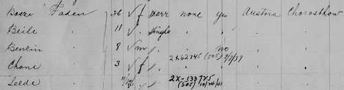
Basze's immigration form says that she was literate and would be joining her husband, Joel Faden.
Dad's mother Sarah Spellun was born February 15, 1902, in Kovel, then part of Russia. She immigrated to the US with her parents Israel Spellun (born 1877) and Rose Spellun (nee Tannenbaum) (1879-1941) and siblings via Quebec, Canada, March 14, 1903.
Chorostkow, now known as Khorostkiv, and Kovel both now lie in modern day Ukraine. The Jewish communities in both cities were devastated during the Holocaust. See CHOROSTKOW: Khorostkov, Ukraine (Archive) and Kowel; Testimony and Memorial Book of Our Destroyed Community (Kovel, Ukraine) (Archive).
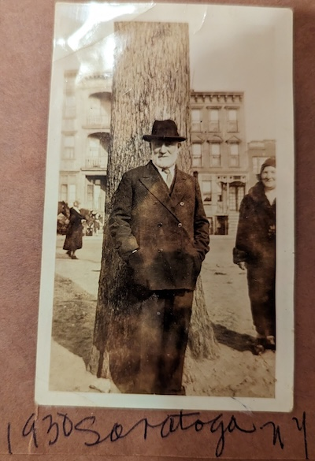
Dad's first elementary school was PS-25, next door to his grandfather Joel Faden's house at 573 Union Avenue. Dad lived there with his parents and other relatives. Dad remembers hearing the school bell ring. Other memories: His grandparents would put carp in the bathtub to keep it fresh (alive). His grandpa once threw a dart at him for sassing him. Dad thinks it may have gotten stuck in his foot. The house was cold at night since his grandpa wouldn't heat it overnight to save money.
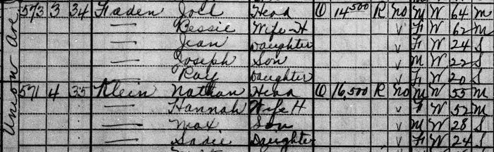
The 1930 Census, 4 years before Dad's birth, shows 5 residents, all Fadens, at the 573 Union Avenue house: Joel (then aged 64) and Bessie (aged 62) plus their children Jean (24), Joseph (22), and daughter Ray (20). It shows they owned the home and that it was valued at $14,500. It had a radio. It shows that Joel and Bessie immigrated to the US in 1893 and 1895, both from Austria, and that before coming to the US, they spoke Yiddish. It shows that neither Joel nor Bessie had yet been naturalized. Joel's occupation is "furrier" with "own shop" as industry. Jean's occupation is "artist" with "lamp shade" as industry. Joseph's is "collector" in "household articles". All three children are listed as single.
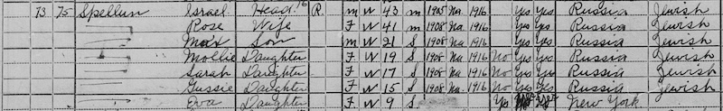
The 1920 Census shows the Spelluns renting a place at 559 Southern Boulevard, along with multiple other families. It says that Israel Spellun (aged 43) had immigrated in 1905, his wife Rose (aged 41), son Max (21), and daughters Mollie (19), Sarah (17), and Gussie (15) had followed in 1908. Their place of birth is listed as Russia, their mother tongue "Jewish". All were naturalized in 1916. Another daughter Eva (aged 9) was born in New York City. All could read and write and speak English. Israel's occupation is listed as "painter" in the "buildings" industry. Max's occupation was "bookkeeper" for an oil company. Mollie was also a bookkeeper but for a clothing company. Sarah, Dad's future mom, worked as a sales lady for a dry goods company. All the children are listed as being single.
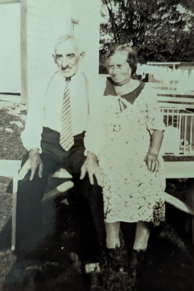
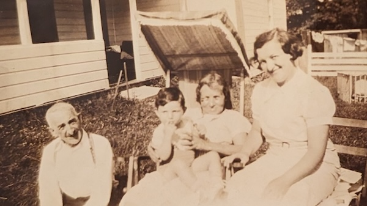
Both Dad's paternal and maternal grandparents would read the newspaper in Yiddish. He also remembered his mom's father Israel Spellun would go every day to the schul.
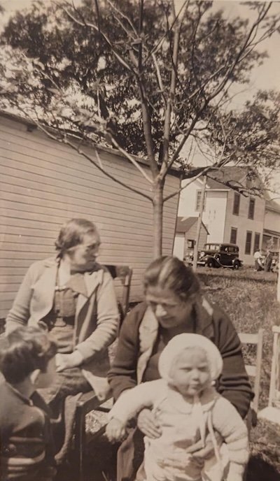
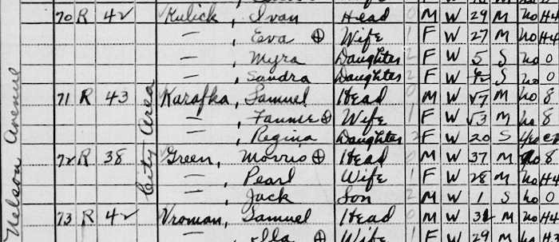
The 1940 Census shows that Myra Kulick's family lived in a rented place at 1194 Nelson Avenue, same street where Dad's family would eventually settle. Myra's father Ivan Kulick (aged 29) worked as a "salesman" in the "butcher saws" industry. Myra's mom Eva was 27 while Myra is listed as being 5 years old, her sister Sandra "6/12" (6 months old?). Ivan is said to have been born in New York. Both he and Eva are listed as having "H4" (senior in high school) as their highest level of education. Ivan Kulick's parents are said to be from Russia, their mother tongue "Jewish".
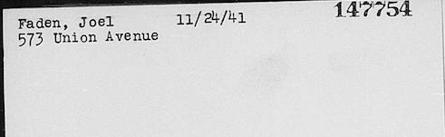
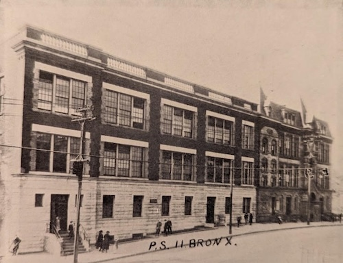
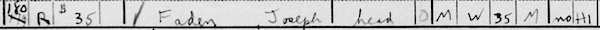
The 1940 Census shows Dad's father Joseph living away from the Union Avenue home, at 180 West 168 Street (rented). It says that the highest grade Joseph completed was "H1" (9th grade). It lists his occupation as "salesman", with "retail furniture co" as the industry. It says that he worked 52 weeks in 1939, earning $1200. It says that his monthly rent was $35. It says he was 35 in 1940. (So, we have three potential birth years for him: 1904, 1908, based on the 1930 Census, and 1905, based on the 1940 Census.)
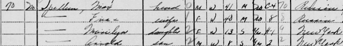
The 1940 Census shows Sarah's oldest sibling Max (aged 41) to be renting a place in 2685 University Avenue. He was married to Eva (40) with children Marilyn (13) and Arnold (8). Our dad knew Arnold Spellun as "Big Arnold". Max is listed as working as an account, with 4 years of college. Eva's education stopped at 8th grade. Her daughter Marilyn was in 9th grade. Their rent was $70/month. Max was said to have worked 48 hours in the past week and 50 weeks in the past year. Both Max and Eva are said to be from Russia.
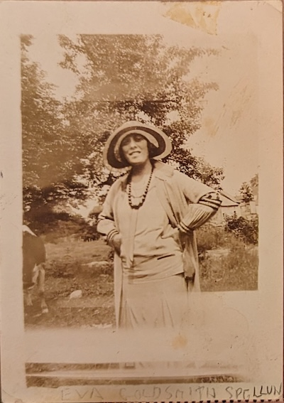
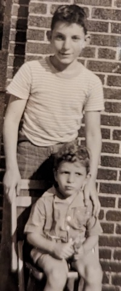
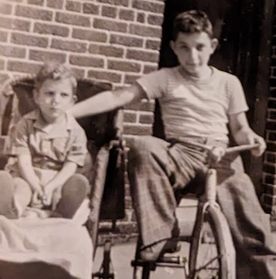
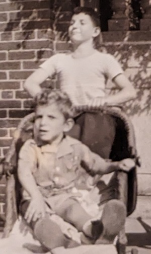
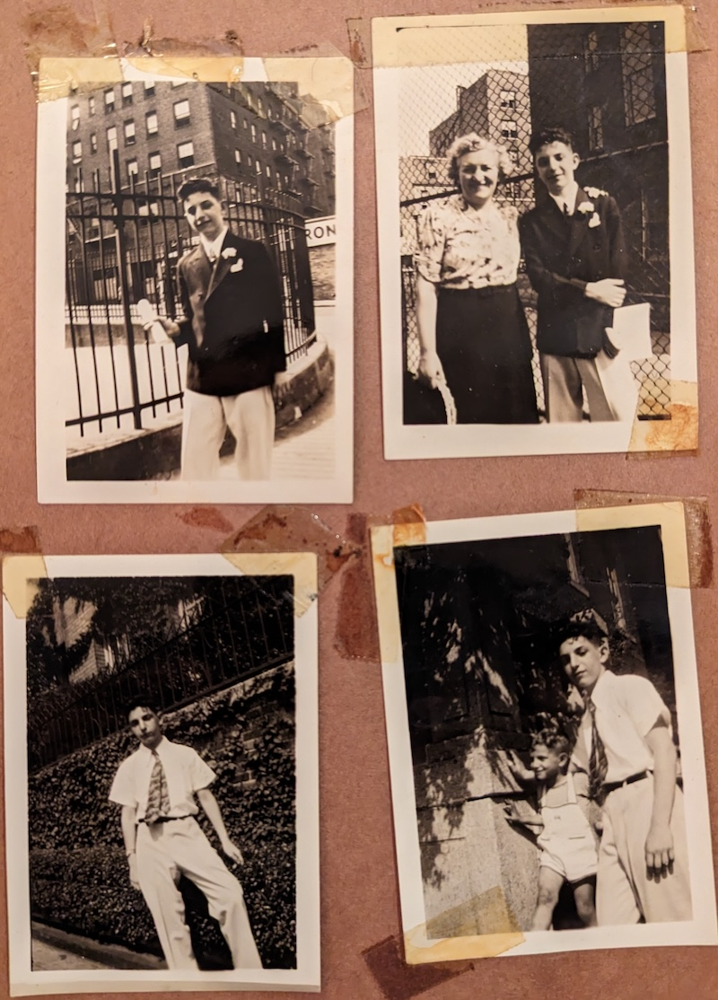
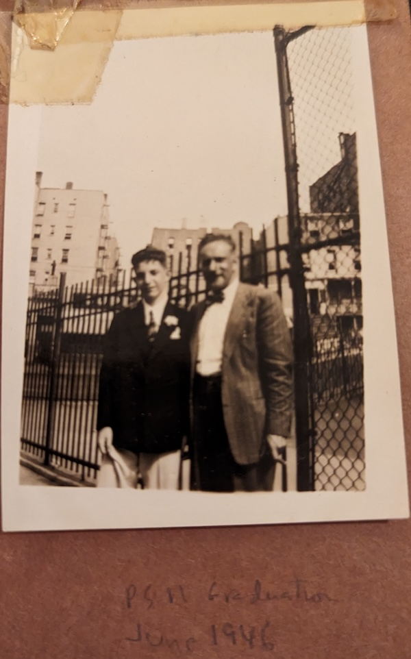
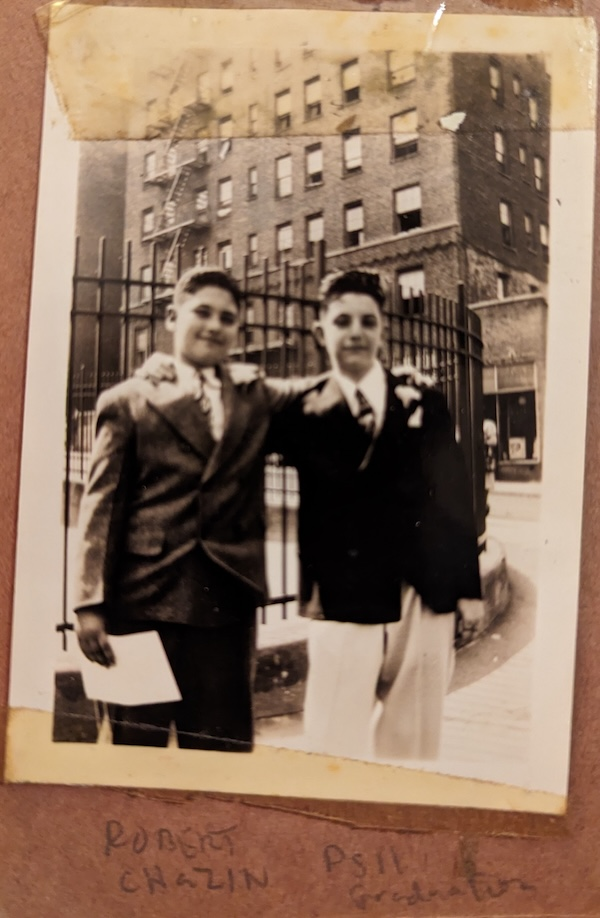
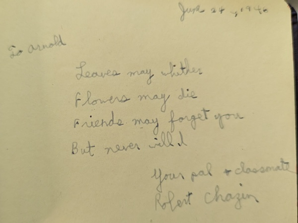
June 24, 1946
To Arnold,Leaves may wither
Flowers may die
Friends may forget you
But never will IYour pal + classmate
Robert Chazin
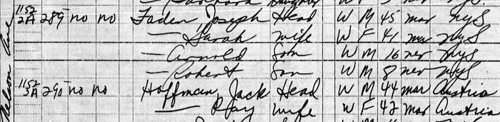
Dad graduated from Bronx Science High School in 1950. The 1950 Census shows the family renting an apartment at 1152 Nelson Avenue, along with many other families. Joseph Faden (aged 45) is said to have worked 40 hours in the prior week as a "route salesman". Our dad was 16, his brother Robert 8. There are a couple anomalies with the data recorded for their mom Sarah Faden (nee Spellun). Her age is listed as 41, and she is not noted as being an immigrant. If we add 30 years to her age from the 1920 Census, she was actually 47.
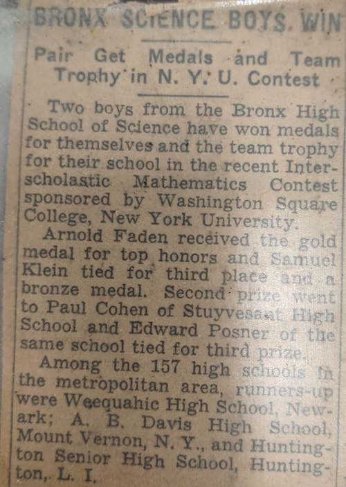
BRONX SCIENCE BOYS WIN; Pair Get Medals and Team Trophy in N.Y.U. Contest
Two boys from the Bronx High School of Science have won medals for themselves and the team trophy for their school in the recent Interscholastic Mathematics Contest sponsored by Washington Square College, New York University.
Arnold Faden received the gold medal for top honors and Samuel Klein tied for third place and a bronze medal. Second prize went to Paul Cohen of Stuyvesant High School and Edward Posner of the same school tied for third prize.
Paul Cohen would go on to win the Fields Medal, one of the highest honors in mathematics, in 1966 for proving that the continuum hypothesis is independent of set theory.
Our dad started out at City College as a philosophy major. Perhaps this undated paper of his, in the form of a dialogue, is from that time: "Disciple: You were leading up to the question of the purpose of life... Philosopher: ... KNOWLEDGE IS TRUE BELIEF..."
Dad graduated from City College in 1954.
Training Wheels
Dad wasn't too steady on a bike himself
yawping in a sympathetic cadence to my wobble.
Tongue out, I swung the red frame side to side
reaching now the angle of repose
now the point of no return.Until, undulations decreasing,
momentum all with me now
I rushed toward the breathy world.
Each square of concrete a bumpy step leading
wherever I was going to go.Fast.
-- Teresa Alto, Migrations: Poetry & Prose for Life's Transitions (2011)
Dad retired from Iowa State in 1997. He gave a talk to the Economics department beginning: "This... is really a combination of progress report and a kind of apology for the life I've been leading for the last couple of decades and it has elements of a farewell address to it since I'm officially retiring in May, although I hope to be around in an unofficial capacity for some time longer."
During a September 2026 visit, Prof. Orazem said that at least up until the pandemic, Dad was one of the faculty members he saw the most, even after Dad retired, since Dad still came to the department almost every day to check his mail. He also remembered Dad as being the go-to person in the department for questions on which probability distribution to use.
The COVID-19 pandemic ended Dad's daily visits to the Parks Library and campus.
Dad got to know David Blackwell when Blackwell gave a talk to the Iowa State Statistics department. Dad asked a question and the two got to talking, leading eventually to an invitation for Dad to visit Berkeley.
Today Blackwell is honored on the Berkeley campus with a dorm building
named for him --
Blackwell Hall.
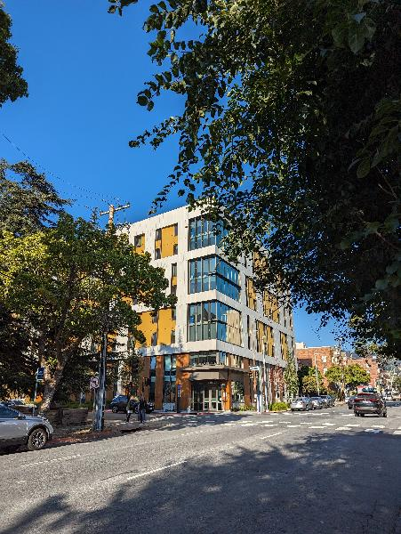 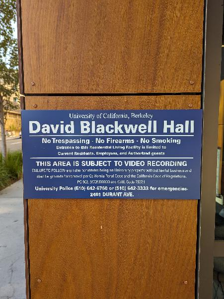
Nvidia also named a GPU for him.
In order to avoid potentially getting drafted for a longer period of time, Dad volunteered for the Air Force. A July 1958 photo shows him with his squadron in Texas.
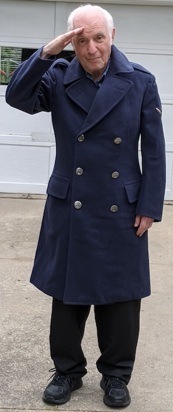
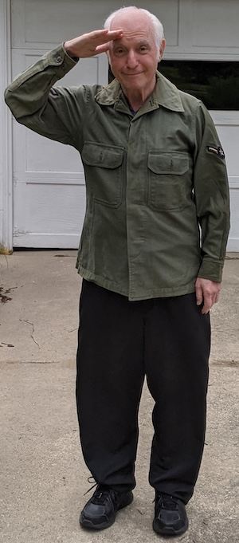
Dad was stationed at Lackland Air Force Base. He considered the name ironic since land was the one thing it didn't lack.
He said, "Never did figure out how to get my cap to sit squarely on my head."
One time a sergeant bought him dinner. "Do you know what you just ate?" the sergeant said. The sergeant answered his own question: "Octopus!" He expected Dad to get sick, but Dad just said, "It was tasty."
He doesn't consider himself to be a veteran since he doesn't have at least two years of active service.
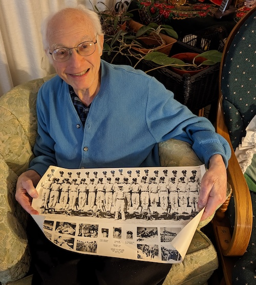
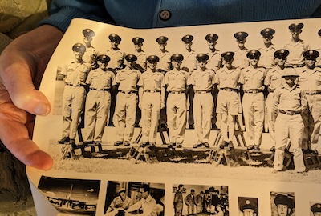
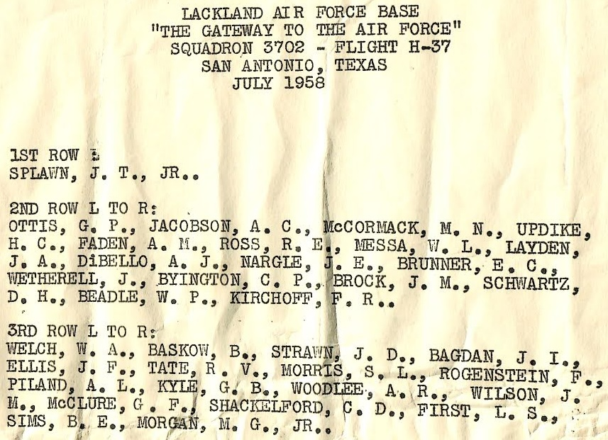
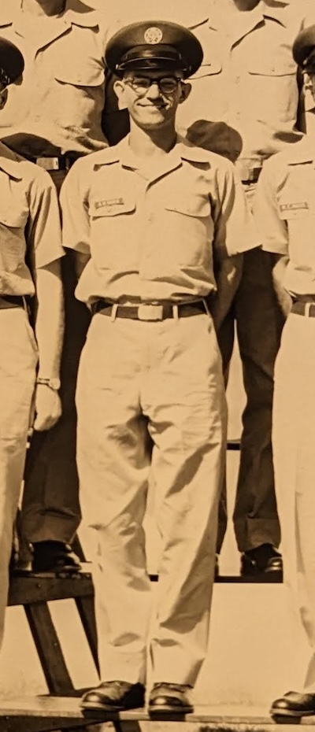